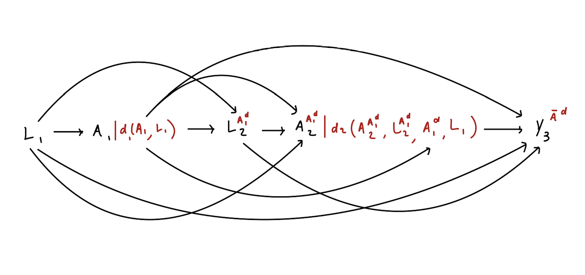

定义一般化的假设干预
Defining General, Hypothetical Interventions · Beyond the ATE 工作坊中译
来源：Nick Williams、Kara Rudolph、Iván Díaz，Beyond the ATE · Defining Interventions （GitHub 仓库），GPL-3.0 许可。 本页为中文翻译，非原文；按 GPL-3.0 保留原作者署名与许可证，并标明这是修改（翻译）后的版本。 公式与记号按原文逐字保留；原站的 webR 交互代码块在本站以静态代码块呈现，不重新执行。
\[ \renewcommand{\P}{\mathsf{P}} \newcommand{\m}{\mathsf{m}} \newcommand{\p}{\mathsf{p}} \newcommand{\q}{\mathsf{q}} \newcommand{\bb}{\mathsf{b}} \newcommand{\g}{\mathsf{g}} \newcommand{\rr}{\mathsf{r}} \newcommand{\IF}{\mathbb{IF}} \newcommand{\dd}{\mathsf{d}} \newcommand{\Pn}{\mathsf{P}_n} \newcommand{\E}{\mathsf{E}} \]
因果路线图（causal roadmap）为评估因果研究问题提供了一套系统方法 (Petersen 和 Laan 2014)，共包含 8 个步骤：
- 明确研究问题
- 定义因果模型
- 借助反事实定义所关心的因果效应
- 描述观测数据
- 在清晰陈述的假设下，把因果效应识别为一个统计估计量
- 定义统计估计问题
- 估计该统计估计量
- 在研究问题、因果假设和统计假设的语境下解释结果
本节聚焦第 2 步和第 5 步。前面我们把 \(\dd(a_t, h_t, \epsilon_t)\) 定义为一个函数， 它把取值 \(a_t\)、\(h_t\) 以及可能存在的随机化装置 \(\epsilon_t\) 映射为一个新的处理取值。 下面来看这个函数如何用于定义处理效应。接下来我们的目标，是通过因果参数
\[ \theta = \E[Y^{\bar A^{\dd}}]\text{,} \]
来估计由干预 \(\dd\) 刻画的干预对结局 \(Y\) 的因果效应。其中 \(Y^{\bar A^{\dd}}\) 是 这样一个世界中的反事实结局：在那个（可能与事实相反的）世界里， \(\bar{A} = (A_1, \ldots, A_\tau)\) 的每个分量都按函数 \(\dd\) 依如下方式被修改。
在时点 \(t=1\)，干预后的处理被赋值为 \(A_1^\dd = \dd(A_1, H_1)\)。 这会在时点 \(t=2\) 生成一个反事实处理，记作 \(A_2^{A_1^\dd}\)。 它表示：若干预只在 \(t=1\) 实施、在 \(t=2\) 未实施，个体本会接受的处理。
在时点 \(t=2\)，干预后的处理被赋值为 \(A_2^\dd = \dd(A_2^{A_1^\dd}, L_2^{A_1^\dd}, A_1^\dd, L_1)\)。 这会在时点 \(t=3\) 生成一个反事实处理。
这一过程迭代重复直到研究结束。届时，反事实结局 \(Y^{\bar A^{\dd}}\) 被生成出来。

这一定义与结局的类型无关：
当 \(Y\) 是连续变量时，\(\theta\) 是干预 \(\dd\) 下 \(Y\) 的总体均值。
当 \(Y\) 是二值变量时，\(\theta\) 是干预 \(\dd\) 下事件 \(Y\) 的总体比例。
当 \(Y\) 是研究结束前是否发生某事件的指示变量时，\(\theta\) 定义为干预 \(\dd\) 下 \(Y\) 的累积发病率。
本节末尾我们会说明，在一定假设下如何从观测数据中识别这个因果参数。
我们在方法学因果推断文献里读到的大多数论文，都假定处理变量或暴露变量是二值的。 这么做往往是为了简化因果效应的定义，但现实中许多我们关心的暴露并不是二值的。 与之相反，本工作坊要处理的是 \(A\) 为二值、分类、多元或连续变量的情形！
可是这个函数 \(\dd\) 究竟是什么？该怎么定义它？用它来定义干预又是怎样解决问题的？ 让我们从简单到复杂，逐一看看 \(\dd\) 的各种例子。
静态干预
设 \(A\) 是二值向量（例如是否服用某种药物），并定义 \(\dd(a_t, h_t, \epsilon) = 1\)。 这一干预刻画的假设世界是：总体中所有成员在所有时点都接受处理。
如果函数 \(\dd_t\) 无论输入为何都返回同一取值，这个干预就是静态的。
例
假设我们关心的是：把阿片类物质使用障碍患者随机分配到注射用纳曲酮（\(A=1\)） 与舌下含服丁丙诺啡（\(A=0\)）的效应。我们会对比两个假设世界中的反事实结局： 一个是所有单元都接受注射用纳曲酮 \(\dd_1=1\)，另一个是所有单元都接受丁丙诺啡 \(\dd_0=0\)。这给出的就是众所周知的平均（比较）处理效应（ATE）。 \[\E[Y^{\bar A^{\dd_1}} - Y^{\bar A^{\dd_0}}] = \E[Y^{A=1} - Y^{A=0}]\]
动态处理方案
设 \(A_t\) 是二值向量（例如是否服药），\(L_t\) 是数值向量（例如不适程度的度量）。 对给定的 \(\delta\) 值，定义 \[ \dd(a_t, h_t, \epsilon) = \begin{cases} 1 &\text{ if } l_t > \delta \\ 0 &\text{ otherwise.} \end{cases} \]
若函数 \(\dd\) 的输出仅仅依赖于历史 \(H_t\)，这类干预称为动态的。
例
Rudolph, Williams, 等 (2022) 研究了一组因阿片类物质使用障碍而服用丁丙诺啡–纳洛酮 （BUP-NX）的患者中的给药策略。在该假设干预下，若患者在就诊前一周报告使用过 阿片类物质，则增加 BUP-NX 剂量；未报告前一周使用的患者维持原剂量。 令 \(A_t\) 为第 \(t\) 周相对第 \(t-1\) 周是否增加 BUP-NX 剂量的二值指示变量， \(L_t\) 为第 \(t\) 周是否使用阿片类物质的指示变量。于是， \[ \dd(a_t, h_t, \epsilon) = \begin{cases} 1 \text{ if } l_{t-1} = 1\\ 0 \text{ otherwise} \end{cases} \]
修正处理策略
静态干预和动态干预受到了大量关注，但使用它们往往伴随几个关键问题。
用「对所有单元施加处理」的假设干预来定义因果效应，可能根本无法想象。 例如，我们也许想知道缩短手术时间是否会减少手术并发症。然而，把所有手术都 设定为某个给定时长是无法想象的——哪怕这个时长依赖于患者的协变量。
用「对所有单元施加处理」的假设干预来定义因果效应，可能引发正性假设违背。
解决这些问题的一个办法，是改用修正处理策略（modified treatment policies, MTP） 来定义因果效应。
如果一个干预刻画的假设世界是「处理的自然取值被加以修正」， 那么这个干预就称为修正处理策略。
加法移位与乘法移位 MTP
设 \(A_t\) 是数值向量。假定 \(A_t\) 在数据中的支撑满足 \(P(A_t \leq u(h_t) \mid H_t = h_t) = 1\)。对分析者设定的 \(\delta\) 值，定义 \[ \dd(a_t, h_t, \epsilon) = \begin{cases} a_t + \delta &\text{ if } a_t + \delta \leq u(h_t) \\ a_t &\text{ otherwise.} \end{cases} \]
在这一干预下，只要这样的增加是可行的，时点 \(t\) 处暴露的自然取值就被增加分析者 设定的 \(\delta\)。这类 MTP 称为加法移位 MTP（additive shift MTP）。
例
Dı́az 等 (2023) 估计了在急性呼吸衰竭患者（P/F 比 < 300）中， 把 P/F 比（\(A_t\)，一个低氧血症的度量）提高 50 个单位对生存的效应。 \[ \dd_t(a_t, l_t, \epsilon) = \begin{cases} a_t + 50 &\text{ if } a_t \leq 300 \\ a_t &\text{ otherwise} \end{cases} \]
类似地，我们可以定义乘法移位 MTP：
\[ \dd(a_t, h_t, \epsilon) = \begin{cases} a_t \times \delta &\text{ if } a_t \times \delta \leq u(h_t) \\ a_t &\text{ otherwise}. \end{cases} \]
例
Nugent 和 Balzer (2023) 评估了 2022 年夏秋两季美国县级流动性指标与新增 COVID-19 病例之间的关联。他们同时考虑了假设的加法 MTP 和乘法 MTP； 例如，他们定义了一个乘法 MTP，把「到访商业场所的移动设备密度」这一指标降低 25%： \[ \dd(a_t, l_t, \epsilon) = a_t \times 0.75. \]
随机化干预
设 \(A\) 是二值向量，\(\epsilon \sim U(0, 1)\)，且 \(\epsilon\) 取分析者设定的 0 到 1 之间的值。 由此我们可以定义随机化干预。例如，设想我们关心这样一个假设世界：所有吸烟者中 有一半戒了烟。这一干预定义为
\[ \dd(a_t, \epsilon_t) = \begin{cases} 0 &\text{ if } \epsilon_t < 0.5 \text{ and } a_t = 1 \\ a_t &\text{ otherwise} \end{cases}. \]
基于风险比的增量倾向评分干预
设 \(A\) 是二值变量，\(\epsilon \sim U(0, 1)\)，\(\delta\) 是分析者设定的风险比，限制在 \(0\) 与 \(1\) 之间。此外定义 \(P(A_t = a_t\mid H_t)= \g(a_t \mid H_t)\)。
如果我们关心的是一个降低接受处理可能性的干预，定义
\[ \dd_t(a_t, h_t, \epsilon_t) = \begin{cases} a_t &\text{ if } \epsilon_t < \delta \\ 0 &\text{ otherwise} \end{cases}. \] 此时有 \(\g^\dd(a_t \mid h_t) = a_t \delta \g_t(1 \mid H_t) + (1 - a_t) (1 - \delta \g_t(1\mid H_t))\)， 于是干预后与干预前倾向评分之比为 \(\g_t^\dd(1 \mid H_t)/\g_t(1\mid H_t) = \delta\)， 即风险比等于 \(\delta\)。
若一个干预移位的是处理的条件概率，则称之为增量倾向评分干预 （incremental propensity score intervention, IPSI）。
反过来，如果我们关心的是一个提高接受处理可能性的干预，定义
\[ \dd_t(a_t, h_t, \epsilon_t) = \begin{cases} a_t &\text{ if } \epsilon_t < \delta \\ 1 &\text{ otherwise.} \end{cases} \]
此时 \(\g_t^\dd(a_t \mid H_t) = a_t (1 - \delta \g_t(0\mid H_t)) + (1 - a_t) \delta \g_t(0 \mid H_t)\)， 它蕴含风险比 \(\g_t^\dd(0\mid H_t)/\g(0\mid H_t) = \delta\)。
此前也有人提出在优势比尺度上做移位的干预，但优势比移位的效应不应用 lmtp 估计，后面我们会进一步讨论这一点。
例
Wen, Marcus, 和 Young (2023) 利用电子健康档案数据，在接受性传播感染（STI）检测且未感染 HIV 的顺性别男性中，估计了提高 PrEP 使用比例对细菌性 STI 的效应。 令 \(A_t\) 为第 \(t\) 周是否启动 PrEP 的二值指示变量，\(L_t\) 为第 \(t\) 周是否接受过任何 STI 检测且未感染 HIV 的二值指示变量。他们把「中等」成功程度的 PrEP 推广干预定义为 \[ \dd(a_t, h_t, \epsilon) = \begin{cases} a_t &\text{ if } l_t = 1 \text{ and } \epsilon_t < 0.85 \\ 1 &\text{ otherwise}. \end{cases} \]
因果参数的识别
回忆因果推断的根本问题：我们无法观测到用来定义因果效应的那些替代世界。 既然观测不到反事实变量，又该如何学到因果效应呢？在一组特定假设下， 我们可以从观测数据中识别出因果参数。这些假设称为识别假设。
识别假设
正性（Positivity）。若 \((a_t, h_t) \in \text{supp}\{A_t, H_t\}\)， 则对 \(t \in \{1, ..., \tau\}\) 有 \(\dd(a_t, h_t) \in \text{supp}\{A_t, H_t\}\)。
如果存在一个单元其观测处理取值为 \(a_t\)、协变量为 \(h_t\)，那么也必须存在一个 单元其处理取值为 \(\dd(a_t, h_t)\)、协变量为 \(h_t\)。
强序贯可交换性（Strong sequential exchangeability）。对所有 \(s \in \{t+1, ..., \tau\}\)，\(A_t\) 与 \((L_s, A_s, Y)\) 的一切共同原因都已被测量， 且都包含在 \(H_t\) 中。
对所有时点 \(t\)，历史 \(H_t\) 含有足够的变量，可以调整 \(A_t\) 与其后任何变量 （包括未来的处理）之间的混杂。
在这些假设下，时点 \(t\) 处处理自然取值的分布，等于在给定观测历史条件下时点 \(t\) 处 处理观测取值的分布。
在上述假设下，\(\theta\) 可由观测数据识别如下：
令 \(\m_{\tau+1} = Y\)。在记号上稍作滥用，记 \(A_t^\dd = \dd(A_t, H_t)\)。 对 \(t = \tau, ..., 1\)，递归地定义
\[ \m_t: (a_t, h_t) \rightarrow \E[\m_{t + 1}(A^{\dd}_{t+1}, H_{t + 1}) \mid A_t = a_t, H_t = h_t], \]
并定义 \(\theta = E[\m_1(A^{\dd}_1, L_1)]\)。
证明
令 \(\tau = 2\)，且 \(\dd\) 是一个只依赖于处理当前自然取值的 MTP。 假设数据由如下 NPSEM 生成： \[ \begin{align} L_1 &= f_{L,1}(U_{L,1})\\ A_1 &= f_{A,1}(L_1, U_{A,1})\\ L_2 &= f_{L,2}(A_1, L_1, U_{L,2})\\ A_2 &= f_{A,2}(L_2,A_1,L_1,U_{A,2})\\ Y &= f_Y(A_2,L_2,A_1,L_1,U_Y). \end{align} \] 所关心的因果量是 \(\theta = \E[Y(\bar{A}^\dd)]\)，其中 \(Y(\bar{A}^\dd)\) 定义为 \[ \begin{aligned} L_1 &= f_{L,1}(U_{L,1})\\ A_1 &= f_{A,1}(L_1, U_{A,1})\\ A_1^\dd &= \dd(A_1)\\ L_2(A_1^\dd) &= f_{L,2}(A_1^\dd, L_1, U_{L,2})\\ A_2(A_1^\dd) &= f_{A,2}(L_2(A_1^\dd),A_1^\dd,L_1,U_{A,2})\\ A_2^\dd &= \dd(A_2(A_1^\dd))\\ Y(\bar{A}^\dd) &= f_Y(A_2^\dd,L_2(A_1^\dd),A_1^\dd,L_1,U_Y). \end{aligned} \] 因此， \[ \begin{align} Y(\bar{A}^\dd) &= f_Y(A_2^\dd,L_2(A_1^\dd),A_1^\dd,L_1,U_Y)\\ &= f_Y(\dd(A_2(A_1^\dd)),L_2(A_1^\dd),\dd(A_1),L_1,U_Y)\\ &= f_Y(\dd(f_{A,2}(L_2(A_1^\dd),A_1^\dd,L_1,U_{A,2})),L_2(A_1^\dd),\dd(A_1),L_1,U_Y)\\ &= f_Y(\dd(f_{A,2}(f_{L,2}(A_1^\dd, L_1, U_{L,2}),A_1^\dd,L_1,U_{A,2})),f_{L,2}(A_1^\dd, L_1, U_{L,2}),\dd(A_1),L_1,U_Y)\\ &= f_Y(\dd(f_{A,2}(f_{L,2}(\dd(A_1), L_1, U_{L,2}),\dd(A_1),L_1,U_{A,2})),f_{L,2}(\dd(A_1), L_1, U_{L,2}),\dd(A_1),L_1,U_Y) \end{align} \] 由全期望公式： \[\theta = \E\big[\E[Y(\bar{A}^\dd)\mid A_1,L_1]\big]. \] 把 \(Y(\bar{A}^\dd)\) 展开： \[ \E\big[\E[f_Y(\dd(f_{A,2}(f_{L,2}(\dd(A_1), L_1, U_{L,2}),\dd(A_1),L_1,U_{A,2})),f_{L,2}(\dd(A_1), L_1, U_{L,2}),\dd(A_1),L_1,U_Y)\mid A_1,L_1]\big] \] 在强序贯可交换性下，\(\{U_Y, U_{A,2}, U_{L,2}\} \perp A_1\mid L_1\)，因此： \[ \begin{align} &\E\big[\E[f_Y(\dd(f_{A,2}(f_{L,2}(\dd(A_1), L_1, U_{L,2}),\dd(A_1),L_1,U_{A,2})),f_{L,2}(\dd(A_1), L_1, U_{L,2}),\dd(A_1),L_1,U_Y)\mid A_1=\dd(A_1),L_1]\big]\\ &\E\big[\E[f_Y(\dd(A_2(\dd(A_1))),L_2(\dd(A_1)),\dd(A_1),L_1,U_Y)\mid A_1=\dd(A_1),L_1]\big]. \end{align} \] 由一致性（consistency），当我们以 \(A_1=\dd(A_1)\) 为条件时，\(L_2(\dd(A_1))\) 和 \(A_2(\dd(A_1))\) 分别等于 \(L_2\) 和 \(A_2\)： \[ \E\big[\E[f_Y(\dd(A_2),L_2,\dd(A_1),L_1,U_Y)\mid A_1=\dd(A_1),L_1]\big]. \] 再由全期望公式： \[ \E\big[\E\big[\E[f_Y(\dd(A_2),L_2,\dd(A_1),L_1,U_Y)\mid A_2,L_2,A_1=\dd(A_1),L_1]\,\big|\,A_1=\dd(A_1),L_1\big]\big]. \] 同样，假定强序贯可交换性 \(U_Y \perp A_2 \mid L_2,A_1,L_1\)，因此可以在最内层的条件集中 把 \(A_2\) 替换为 \(A_2 =\dd(A_2)\)： \[ \E\big[\E\big[\E[f_Y(\dd(A_2),L_2,\dd(A_1),L_1,U_Y)\mid A_2=\dd(A_2),L_2,A_1=\dd(A_1),L_1]\,\big|\,A_1=\dd(A_1),L_1\big]\big]. \] 最后，再用一次一致性论证： \[ \begin{align} &\E\big[\E\big[\E[Y\mid A_2=\dd(A_2),L_2,A_1=\dd(A_1),L_1]\,\big|\,A_1=\dd(A_1),L_1\big]\big]. \end{align} \]
示例
考虑下面这份数据（这里 \(\tau = 2\)）：
set.seed(786543)
n <- 1000
l0 <- rnorm(n)
a1 <- rbinom(n, 1, plogis(-1 + l0*1.5))
l1 <- rnorm(n)
a2 <- rbinom(n, 1, plogis(-1 + l1*1.5 + a1*2))
y <- rnorm(n, -1 - 1.2*l0 + 2.4*a1 - 2*l1 + 1.2*a2)
foo <- data.frame(
L1 = l0,
A1 = a1,
L2 = l1,
A2 = a2,
Y = y
)原站在此处渲染出这 1000 行数据的交互式表格。下面是前 8 行（数值保留两位小数）：
| L1 | A1 | L2 | A2 | Y |
|---|---|---|---|---|
| -0.10 | 0 | -0.57 | 0 | 1.67 |
| 0.40 | 1 | 0.05 | 1 | 0.56 |
| 0.36 | 1 | -0.79 | 1 | 2.71 |
| 1.10 | 1 | -0.01 | 1 | 0.60 |
| -2.27 | 0 | 0.38 | 1 | 1.45 |
| 0.00 | 1 | -1.36 | 0 | 5.20 |
| -1.30 | 0 | 2.22 | 1 | -2.49 |
| 0.43 | 0 | -0.60 | 0 | -2.32 |
以及如下干预
\[ \dd(a_t, \epsilon_t) = \begin{cases} 0 &\text{ if } \epsilon_t < 0.5 \text{ and } a_t = 1 \\ a_t &\text{ otherwise.} \end{cases} \]
该干预下的真值约为 \(-0.37\)。首先，把这个干预翻译成一个 R 函数。
d <- function(a) {
epsilon <- runif(length(a))
ifelse(epsilon < 0.5 & a == 1, 0, a)
}随后我们可以按以下步骤计算识别公式：
令 \(\m_3(A_3^\dd, H_3) = Y\)
m3_d <- foo$Y把 \(\m_3(A_3^\dd, H_3)\) 对 \((A_2, H_2)\) 做回归。这给出一个预测函数， 称之为 \(\m_2(A_2,H_2)\)。
m2 <- glm(m3_d ~ L1 + A1 + L2 + A2, data = foo) summary(m2)用该预测函数计算：若干预在时点 \(t=2\) 被实施会发生什么， 即计算 \(\m_2(A_2^\dd,H_2)\)。
m2_d <- predict(m2, mutate(foo, A2 = d(A2))) head(m2_d)把 \(\m_2(A_2^\dd,H_2)\) 对 \((A_1, H_1)\) 做回归。这给出一个预测函数， 称之为 \(\m_1(A_1,H_1)\)。
m1 <- glm(m2_d ~ L1 + A1, data = mutate(foo, m2_d = m2_d)) summary(m1)用该预测函数计算：若干预在时点 \(t=1\) 被实施会发生什么， 即计算 \(\m_1(A_1^\dd,H_1)\)。
m1_d <- predict(m1, mutate(foo, A1 = d(A1))) head(m1_d)计算 \(\m_1(A_1^\dd,H_1)\) 的均值。这个均值就等于 \(\theta\)。
mean(m1_d)